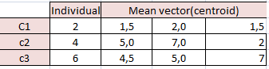
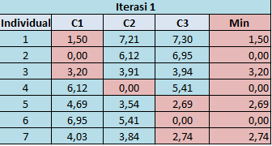
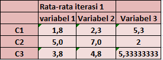
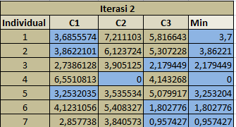
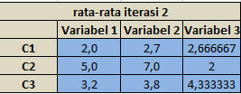
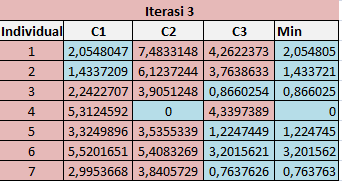
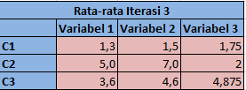
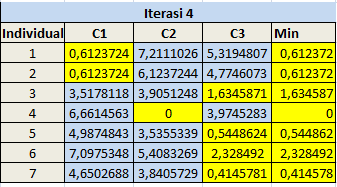
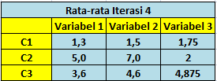

K-Means
Pendahuluan
Pengertian
Data Clustering merupakan salah satu metode Data Mining yang bersifat tanpa arahan (unsupervised). Ada dua jenis data clustering yang sering dipergunakan dalam proses pengelompokan data yaitu hierarchical (hirarki) data clustering dan non-hierarchical (non hirarki) data clustering. K-Means merupakan salah satu metode data clustering non hirarki yang berusaha mempartisi data yang ada ke dalam bentuk satu atau lebih cluster/ kelompok.
Metode ini mempartisi data ke dalam cluster/ kelompok sehingga data yang memiliki karakteristik yang sama dikelompokkan ke dalam satu cluster yang sama dan data yang mempunyai karakteristik yang berbeda dikelompokkan ke dalam kelompok yang lain. Adapun tujuan dari data clustering ini adalah untuk meminimalisasikan objective function yang diset dalam proses clustering, yang pada umumnya berusaha meminimalisasikan variasi di dalam suatu cluster dan memaksimalisasikan variasi antar cluster. Manfaat Clustering adalah sebagai Identifikasi Object (Recognition) misalnya dalam bidang Image Processing, Computer Vision atau robot vision. Selain itu adalah sebagai Sistem Pendukung Keputusan dan Data Mining seperti Segmentasi pasar, pemetaan wilayah, Manajemen marketing dll.
K-means clustering merupakan salah satu metode data clustering non-hirarki yang mengelompokan data dalam bentuk satu atau lebih cluster/kelompok. Data-data yang memiliki karakteristik yang sama dikelompokan dalam satu cluster/kelompok dan data yang memiliki karakteristik yang berbeda dikelompokan dengan cluster/kelompok yang lain sehingga data yang berada dalam satu cluster/kelompok memiliki tingkat variasi yang kecil (Agusta, 2007).
Karakteristik K-Mean
- K-means sangat cepat dalam proses clustering.
- K-means sangat sensitive pada pembangkitan centroid awal secara random.
- Memungkinkan suatu cluster tidak mempunyai anggota.
- Hasil clustering dengan K-means bersifat unik (selalu berubah-ubah, terkadang baik, terkadang jelek).
Tujuan Analisis Cluster
- Untuk mengelompokkan objek-objek (individu-individu) menjadi kelompok-kelompok yang mempunyai sifat yang relatif sama (homogen).
- Untuk membedakan dengan jelas antara satu kelompok (cluster) dengan kelompok lainnya.
Manfaat Analisis Cluster
- Untuk menerapkan dasar-dasar pengelompokan dengan lebih konsisten.
- Untuk mengembangkan suatu metode generalisasi secara induktif, yaitu pengambilan kesimpulan secara umum dengan berdasarkan fakta-fakta khusus.
- Menemukan tipologi yang cocok dengan karakter obyek yang diteliti.
- Mendiskripsikan sifat-sifat/karakteristik dari masing-masing kelompok.
Algoritma
Data clustering menggunakan metode K-Means ini secara umum dilakukan dengan algoritma dasar sebagai berikut (Yudi Agusta, 2007) :
-
Tentukan jumlah cluster.
-
Alokasikan data ke dalam cluster secara random.
-
Hitung centroid/ rata-rata dari data yang ada di masing-masing cluster.
-
Alokasikan masing-masing data ke centroid/ rata-rata terdekat.
-
Kembali ke Step 3, apabila masih ada data yang berpindah cluster atau apabila perubahan nilai centroid, ada yang di atas nilai threshold yang ditentukan atau apabila perubahan nilai pada objective function yang digunakan di atas nilai threshold yang ditentukan.
Eucledian Distance
Untuk mengelompokkan sebuah data pada kelompok tertentu, hal yang harus dilakukan adalah menghitung jarak antara data dengan centroid. Beberapa distance space telah diimplementasikan dalam menghitung jarak (distance antara data dan centroid) termasuk di antaranya L1 (Manhattan/ City Block distance space, L2 (Euclidean) distance space, dan Lp (Minkowski) distance space. Jarak antara dua titik x1 dan x2 pada Manhattan/City Block distance space dihitung dengan menggunakan rumus sebagai berikut (Yudi Agusta, 2007):
(1)

(2)

Dimana:
DL2 : jarak kuadrat Euclidean antar onjek ke x2 dengan x1
P : jumlah variabel cluster
x2j : nilai atau data dari objek ke-2 pada variabel ke-j
x1j : nilai atau data dari obbjek ke-1 ada variabel ke-j (Everitt, 1993).
Kelebihan
- Mudah untuk diimplementasikan dan dijalankan.
- Waktu yang dibutuhkan untuk menjalankan pembelajaran ini relatif cepat.
- Mudah untuk diadaptasi.
- Umum digunakan.
Kekurangan
Sebelum algoritma dijalankan, k buah titik diinisialisasi secara random sehingga pengelompokkan data yang dihasilkan dapat berbeda-beda. Jika nilai random untuk inisialisasi kurang baik, maka pengelompokkan yang dihasilkan pun menjadi kurang optimal.
Dapat terjebak dalam masalah yang disebut curse of dimensionality. Hal ini dapat terjadi jika data pelatihan memiliki dimensi yang sangat tinggi (Contoh jika data pelatihan terdiri dari 2 atribut maka dimensinya adalah 2 dimensi. Namun jika ada 20 atribut, maka akan ada 20 dimensi). Salah satu cara kerja algoritma ini adalah mencari jarak terdekat antara k buah titik dengan titik lainnya. Jika mencari jarak antar titik pada 2 dimensi, masih mudah dilakukan. Namun bagaimana mencari jarak antar titik jika terdapat 20 dimensi. Hal ini akan menjadi sulit.
Jika hanya terdapat beberapa titik sampel data, maka cukup mudah untuk menghitung dan mencari titik terdekat dengan k titik yang diinisialisasi secara random. Namun jika terdapat banyak sekali titik data (misalnya satu milyar buah data), maka perhitungan dan pencarian titik terdekat akan membutuhkan waktu yang lama. Proses tersebut dapat dipercepat, namun dibutuhkan struktur data yang lebih rumit seperti kD-Tree atau hashing.
Implementasi (Studi Kasus)
menentukan data yang akan dianalisis

menghitung centroid/ rata-rata dari data yang ada di masing-masing cluster.

Alokasikan masing-masing data ke centroid/ rata-rata terdekat.Kembali ke Step 3, apabila masih ada data yang berpindah cluster atau apabila perubahan nilai centroid, ada yang di atas nilai threshold yang ditentukan atau apabila perubahan nilai pada objective function yang digunakan di atas nilai threshold yang ditentukan.
iterasi 1

rata-rata iterasi 1

lanjutkan sampai datanya sama,lanjutkan ke iterasi 2
iterasi 2

rata-rata iterasi 2

karena data yang di iterasi masih berbeda maka dilakukan iterasi ketiga
iterasi 3

rata-rata iterasi 3

lakukanlah iterasi sampai data tersebut sama
iterasi ke 4

rata-rata iterasi ke 4

karena datanya sama setelah dilakukan iterasi ke 4 maka iterasi dihentikan
Refrensi:
-
Agusta, Y. 2007. K-means - Penerapan, Permasalahan dan Metode Terkait. Jurnal Sistem dan Informatika Vol. 3 (Februari 2007): 47-60.
-
Santosa, B. 2007. Data Mining: Teknik Pemanfaatan Data untuk Keperluan Bisnis. Yogyakarta: Graha Ilmu.
-
Dalam jurnal SNTIKI, vol (5), Hal 395-398, oleh Nengsih W, Febiyanto pada tahun 2012 dengan judul “Data Mining Analysis Pengelompokan Penerima Beasiswa Menggunakan Teknik Clustering K-Means.
-
https://www.codepolitan.com/5-library-python-untuk-data-science-59b774b6cad97